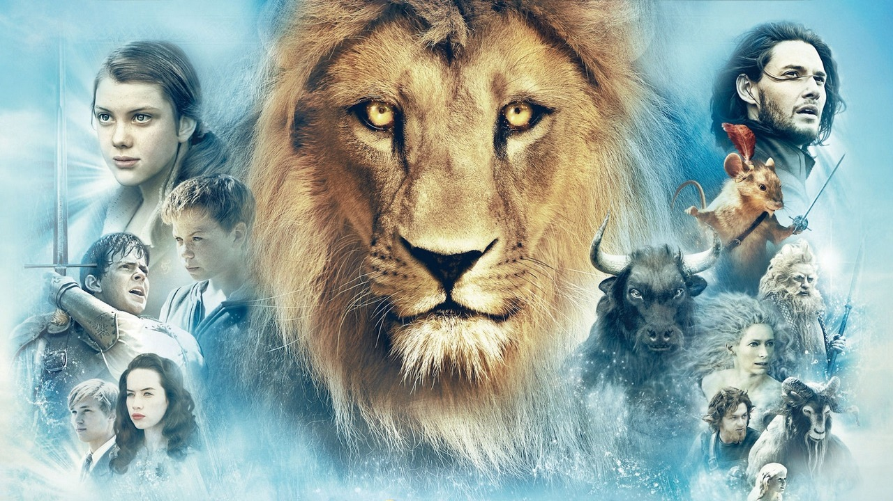

The Chronicles of Narnia (bra: As Crônicas de Nárnia; prt: As Crónicas de Nárnia) é uma série de sete romances de alta fantasia, escrita pelo autor irlandês C. S. Lewis. É a obra mais conhecida dele, e esta série é considerada um clássico da literatura, tendo vendido mais de 120 milhões de cópias mundialmente[1][2], e figura como uma das obras literárias mais bem sucedidas e conhecidas de todos os tempos, tendo sido traduzida em 41 idiomas. Escritas por Lewis entre 1949 e 1954, as Crônicas de Nárnia foram adaptadas diversas vezes, inteiramente ou parcialmente, para a rádio, televisão, teatro e cinema. Além dos tradicionais temas cristãos, a série usa elementos da mitologia grega e nórdica, bem como os tradicionais contos de fadas.
